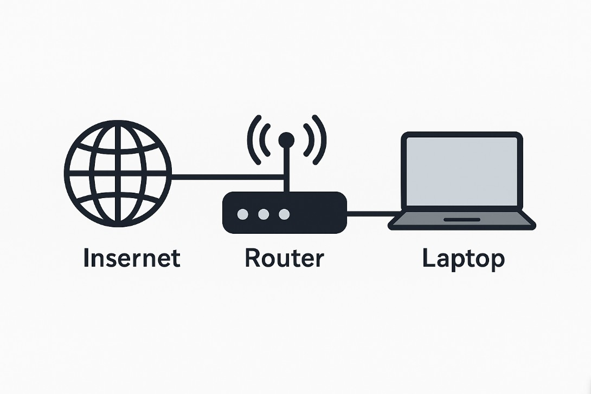
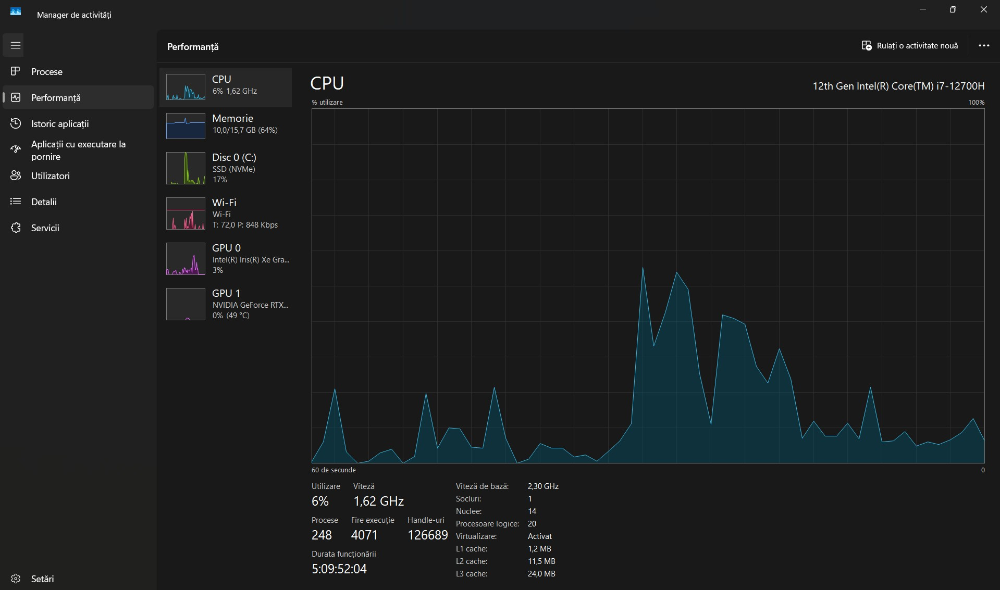
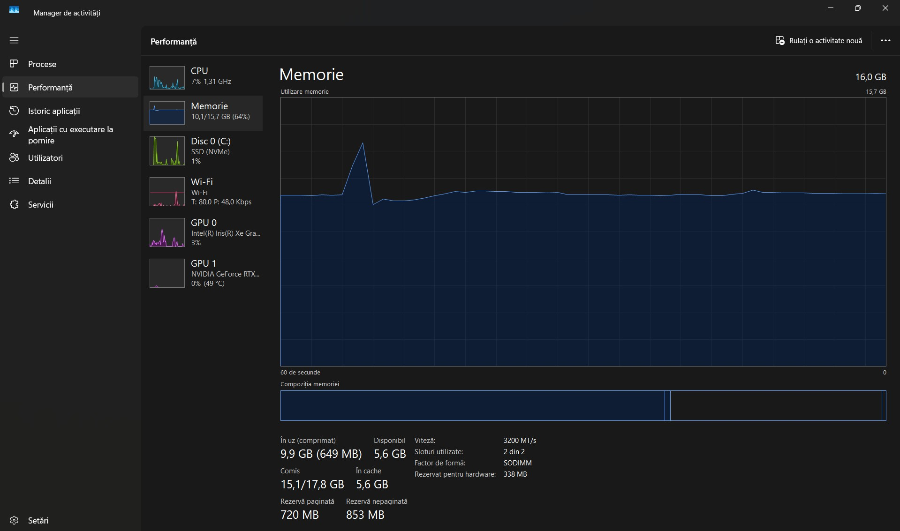
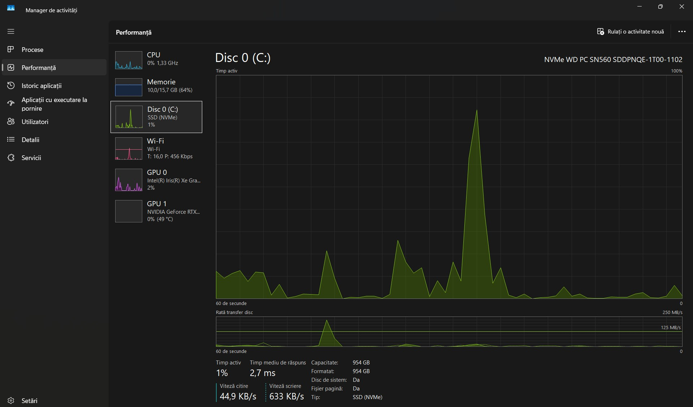

Macari Ion
macari.an.ion@student.utcluj.ro
Structura rețelei personale și accesul la internet:

Caracteristicile conexiunii la rețea:
Adresă MAC: A0:D3:65:80:BF:3D
Adresă IPv4: 192.168.1.131
Debit download: 1000 Mbps
Debit upload: 500 Mbps
Utilizarea resurselor (monitorizare):
  
Specificații tehnice ale stației principale de lucru:
Denumire componentă
Producător
Parametri
Laptop
Intel Corporation
Intel(R) Core™ i7-12700H, 16GB RAM, SSD 1TB
Router
TP-Link
Gigabit, Wi-Fi 5
Mouse
Guangzhou Yuzi e-commerce
mouse de gaming